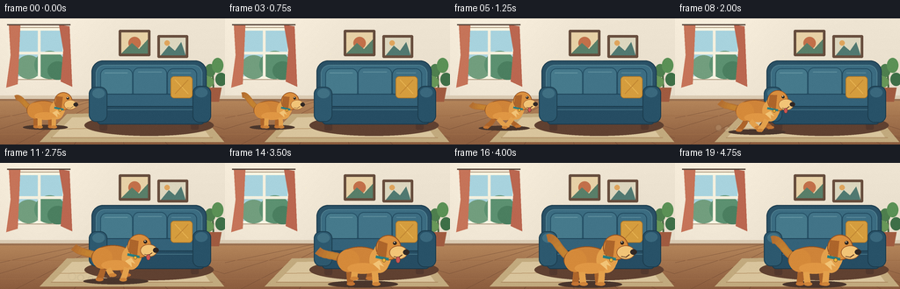
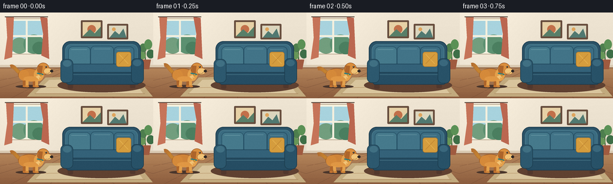

CODING AGENTS AS PIXEL WORLD MODELS
traex/GPT-5.6-Sol · dynamic_spatial_relationship_0001
点击播放 · 原生 RGB 像素
逐轮保存的候选
回放视频、检查图与代码变化。
每份候选均可单独播放。实际图片检查记录在下方工具轨迹中。
候选 01播放与检查图
点击播放 · 原生 RGB 像素


展开代码变化
--- 上一保存版本
+++ 本次保存版本
@@ -0,0 +1,333 @@
+"""Procedurally render the requested 5-second RGB animation.
+
+The composition is deliberately locked to a wide, static shot so that the
+change in spatial relationship is easy to read: the dog starts wholly left of
+the couch, then runs diagonally toward the viewer and finishes in front of it.
+"""
+
+from pathlib import Path
+import json
+import math
+
+import numpy as np
+from PIL import Image, ImageDraw, ImageFilter
+
+import artifact_io
+
+
+ROOT = Path(__file__).resolve().parent
+SPEC = json.loads((ROOT / "task_spec.json").read_text())
+W, H = SPEC["width"], SPEC["height"]
+N = SPEC["frames"]
+AA = 4
+
+
+def sc(v):
+ return int(round(v * AA))
+
+
+def box(b):
+ return tuple(sc(v) for v in b)
+
+
+def rounded(draw, b, r, fill, outline=None, width=1):
+ draw.rounded_rectangle(box(b), radius=sc(r), fill=fill,
+ outline=outline, width=sc(width))
+
+
+def ellipse(draw, b, fill, outline=None, width=1):
+ draw.ellipse(box(b), fill=fill, outline=outline, width=sc(width))
+
+
+def poly(draw, pts, fill):
+ draw.polygon([(sc(x), sc(y)) for x, y in pts], fill=fill)
+
+
+def line(draw, pts, fill, width, joint="curve"):
+ draw.line([(sc(x), sc(y)) for x, y in pts], fill=fill,
+ width=max(1, sc(width)), joint=joint)
+
+
+def cubic(a, b, c, d, steps=18):
+ out = []
+ for t in np.linspace(0, 1, steps):
+ u = 1 - t
+ out.append((u**3*a[0] + 3*u*u*t*b[0] + 3*u*t*t*c[0] + t**3*d[0],
+ u**3*a[1] + 3*u*u*t*b[1] + 3*u*t*t*c[1] + t**3*d[1]))
+ return out
+
+
+def background(frame_index):
+ """A softly textured, sunlit living room."""
+ im = Image.new("RGB", (W * AA, H * AA), (235, 224, 203))
+ px = np.asarray(im).copy()
+ yy = np.arange(H * AA)[:, None]
+
+ # Warm plaster wall, subtly brighter toward the window.
+ wall = yy < sc(91)
+ xgrid = np.arange(W * AA)[None, :]
+ glow = np.exp(-((xgrid - sc(42)) / sc(82)) ** 2) * 10
+ vertical = (yy / sc(91)) * 8
+ for c, base in enumerate((239, 229, 211)):
+ channel = np.clip(base + glow - vertical, 0, 255)
+ px[:, :, c] = np.where(wall, channel, px[:, :, c])
+
+ # Wooden floor gradient.
+ floor_t = np.clip((yy - sc(89)) / sc(55), 0, 1)
+ floor_cols = [(184, 137, 93), (139, 92, 62)]
+ for c in range(3):
+ val = floor_cols[0][c] * (1 - floor_t) + floor_cols[1][c] * floor_t
+ px[:, :, c] = np.where(~wall, val, px[:, :, c])
+ im = Image.fromarray(px.astype(np.uint8))
+ d = ImageDraw.Draw(im)
+
+ # Baseboard and floor seams establish perspective/depth.
+ d.rectangle(box((0, 88, W, 93)), fill=(218, 202, 178))
+ d.rectangle(box((0, 92, W, 94)), fill=(154, 113, 81))
+ for x0 in (-145, -58, 18, 84, 141, 191, 235, 275, 313):
+ line(d, [(128 + (x0 - 128) * .10, 93), (x0, 144)], (112, 73, 51), .45)
+ for y in (111, 132):
+ line(d, [(0, y), (W, y)], (158, 108, 71), .45)
+
+ # Window with sky and a soft daylight bloom.
+ rounded(d, (14, 10, 75, 70), 3, (249, 246, 227), (174, 155, 130), 1)
+ d.rectangle(box((18, 14, 71, 66)), fill=(168, 211, 222))
+ # Distant, simplified foliage outside.
+ ellipse(d, (18, 42, 47, 69), (114, 158, 126))
+ ellipse(d, (39, 37, 74, 69), (92, 145, 113))
+ ellipse(d, (54, 49, 77, 70), (75, 127, 96))
+ d.rectangle(box((43, 14, 46, 67)), fill=(244, 240, 222))
+ d.rectangle(box((18, 38, 71, 41)), fill=(244, 240, 222))
+ # Curtains.
+ poly(d, [(10, 7), (23, 7), (20, 75), (7, 79), (12, 42)], (198, 116, 89))
+ poly(d, [(67, 7), (79, 9), (82, 78), (69, 72), (72, 36)], (187, 103, 80))
+ line(d, [(8, 7), (80, 7)], (91, 74, 63), 1.5)
+
+ # Wall art above the couch.
+ rounded(d, (135, 13, 171, 43), 1.5, (102, 77, 61), None)
+ d.rectangle(box((138, 16, 168, 40)), fill=(231, 209, 166))
+ ellipse(d, (146, 21, 160, 35), (194, 112, 74))
+ poly(d, [(138, 40), (150, 28), (158, 35), (168, 24), (168, 40)], (89, 127, 105))
+ rounded(d, (179, 19, 214, 45), 1.5, (104, 78, 62), None)
+ d.rectangle(box((182, 22, 211, 42)), fill=(220, 214, 190))
+ poly(d, [(183, 42), (192, 31), (199, 37), (206, 27), (211, 42)], (81, 121, 113))
+ ellipse(d, (187, 25, 193, 31), (223, 165, 93))
+
+ # Rug beneath couch, including a woven border.
+ poly(d, [(76, 109), (225, 105), (255, 141), (45, 141)], (194, 170, 126))
+ poly(d, [(82, 113), (220, 110), (239, 136), (59, 136)], (217, 197, 157))
+ line(d, [(68, 126), (232, 123)], (186, 153, 110), 1)
+ line(d, [(58, 136), (242, 136)], (176, 142, 101), 1)
+
+ # A small plant in the far right corner, behind the couch.
+ line(d, [(243, 86), (242, 58)], (74, 102, 66), 2)
+ for b, col in [((233, 52, 245, 67), (78, 127, 78)),
+ ((241, 45, 254, 62), (91, 145, 86)),
+ ((245, 62, 258, 77), (62, 111, 71)),
+ ((229, 66, 243, 79), (104, 151, 88))]:
+ ellipse(d, b, col)
+ poly(d, [(233, 79), (252, 79), (249, 95), (237, 95)], (160, 91, 64))
+
+ # Fixed decor should not be perfectly sterile: tiny animated sunlight motes.
+ for k in range(5):
+ x = 87 + ((k * 31 + frame_index * (k + 1) * .3) % 80)
+ y = 22 + ((k * 17 + frame_index * .45) % 43)
+ ellipse(d, (x, y, x + .7, y + .7), (249, 239, 204))
+ return im
+
+
+def draw_sofa(im):
+ d = ImageDraw.Draw(im)
+ # Floor shadow and walnut feet.
+ ellipse(d, (96, 110, 243, 134), (96, 65, 49))
+ rounded(d, (113, 112, 122, 128), 2, (83, 56, 45))
+ rounded(d, (217, 111, 226, 127), 2, (83, 56, 45))
+
+ # Main upholstered shell with distinct planes and piping.
+ rounded(d, (104, 48, 235, 113), 13, (42, 82, 103), (31, 63, 81), 1.2)
+ rounded(d, (109, 53, 230, 102), 10, (59, 108, 129), (84, 132, 147), .8)
+ # Back cushions.
+ rounded(d, (114, 57, 151, 91), 7, (70, 122, 140), (39, 83, 104), 1)
+ rounded(d, (151, 56, 190, 91), 7, (66, 116, 136), (38, 80, 101), 1)
+ rounded(d, (190, 57, 224, 91), 7, (61, 110, 131), (36, 77, 98), 1)
+ # Gentle cushion highlights.
+ line(d, [(119, 62), (145, 62)], (100, 148, 161), 1)
+ line(d, [(157, 61), (184, 61)], (94, 141, 156), 1)
+ line(d, [(195, 62), (217, 62)], (89, 136, 152), 1)
+
+ # Seat and skirt.
+ rounded(d, (111, 86, 231, 108), 6, (52, 98, 121), (31, 69, 90), 1)
+ rounded(d, (110, 100, 233, 121), 5, (38, 77, 99), (28, 59, 77), 1)
+ line(d, [(116, 104), (227, 104)], (67, 112, 131), 1)
+ # Arms in front of all cushions.
+ rounded(d, (101, 78, 122, 118), 8, (45, 89, 111), (29, 63, 81), 1)
+ rounded(d, (219, 77, 240, 119), 8, (40, 82, 104), (28, 60, 78), 1)
+ ellipse(d, (105, 80, 119, 91), (64, 112, 131))
+ ellipse(d, (222, 79, 236, 90), (58, 104, 125))
+
+ # Mustard throw pillow creates a strong domestic silhouette cue.
+ rounded(d, (194, 66, 219, 91), 4, (213, 157, 62), (170, 114, 40), .8)
+ line(d, [(199, 70), (214, 86)], (232, 181, 83), .65)
+ line(d, [(214, 70), (199, 86)], (191, 132, 49), .65)
+
+
+def draw_dust(im, cx, baseline, scale, progress, phase):
+ """Small puffs trailing the paws during the middle of the run."""
+ if not (0.08 < progress < .92):
+ return
+ layer = Image.new("RGBA", im.size, (0, 0, 0, 0))
+ d = ImageDraw.Draw(layer)
+ fade = int(95 * math.sin(math.pi * progress))
+ for k in range(3):
+ dx = (31 + k * 9 + 3 * math.sin(phase + k)) * scale
+ dy = (3 + k * 1.5) * scale
+ r = (2.6 + k * .8) * scale
+ ellipse(d, (cx-dx-r, baseline-dy-r, cx-dx+r, baseline-dy+r),
+ (226, 205, 166, max(15, fade-k*18)))
+ layer = layer.filter(ImageFilter.GaussianBlur(sc(.6)))
+ im.paste(layer, (0, 0), layer)
+
+
+def draw_dog(im, cx, baseline, scale, phase, running, settle_wag):
+ """Draw a readable golden retriever in side profile with articulated gait."""
+ d = ImageDraw.Draw(im)
+ bounce = (math.sin(phase * 2) * 1.7 * scale) if running else 0
+ by = baseline + bounce
+
+ # Contact shadow is deliberately painted over the sofa's floor shadow: at
+ # the end this reinforces that the dog occupies the near/foreground plane.
+ shadow_w = 35 * scale * (1.1 if running else 1)
+ ellipse(d, (cx-shadow_w, baseline-4*scale, cx+shadow_w,
+ baseline+3.3*scale), (74, 54, 44))
+
+ def P(x, y):
+ return (cx + x * scale, by + y * scale)
+
+ def L(points, color, width):
+ line(d, [P(x, y) for x, y in points], color, width * scale)
+
+ def E(b, color, outline=None, width=1):
+ x1, y1, x2, y2 = b
+ ellipse(d, (cx+x1*scale, by+y1*scale, cx+x2*scale, by+y2*scale),
+ color, outline, max(.5, width*scale))
+
+ def R(b, radius, color, outline=None, width=1):
+ x1, y1, x2, y2 = b
+ rounded(d, (cx+x1*scale, by+y1*scale, cx+x2*scale, by+y2*scale),
+ radius*scale, color, outline, max(.5, width*scale))
+
+ # Tail, behind the body. It swings upward at first and streams backward at speed.
+ wag = math.sin(phase * 1.35 + settle_wag) * (5 if not running else 3)
+ if running:
+ tail = cubic(P(-23, -29), P(-36, -34), P(-44, -31+wag), P(-50, -37+wag), 14)
+ else:
+ tail = cubic(P(-22, -29), P(-36, -39), P(-38, -49+wag), P(-47, -46+wag), 14)
+ # Tapered, fluffy tail strokes.
+ for i in range(5):
+ line(d, tail[:max(3, len(tail)-i*2)], (180+i*4, 111+i*5, 49),
+ (9-i*.9)*scale)
+
+ gold_dark = (173, 101, 43)
+ gold = (207, 132, 57)
+ gold_light = (228, 161, 76)
+ cream = (242, 196, 119)
+ paw = (196, 116, 50)
+
+ # Articulated legs. Rear pair is darker for depth. During a run, opposite
+ # legs extend in opposite directions, making each sampled frame energetic.
+ stride = math.sin(phase) * (13 if running else 1.5)
+ lift_a = max(0, -math.cos(phase)) * (6 if running else 0)
+ lift_b = max(0, math.cos(phase)) * (6 if running else 0)
+ rear_legs = [(-15, -14, stride, lift_a), (8, -14, -stride, lift_b)]
+ for hip, top, ext, lift in rear_legs:
+ knee_x = hip + ext * .42
+ foot_x = hip + ext
+ L([(hip, top), (knee_x, -7-lift*.45), (foot_x, -1-lift)], gold_dark, 7.2)
+ E((foot_x-4, -3-lift, foot_x+5, 1-lift), paw)
+
+ # Body volume, rump, shoulder, and a warm belly highlight.
+ E((-29, -42, 22, -12), gold, (145, 82, 35), 1)
+ E((-28, -39, -4, -14), (213, 138, 58))
+ E((7, -41, 29, -13), gold_light)
+ E((-17, -24, 17, -12), (224, 151, 68))
+
+ # Foreground legs.
+ front_legs = [(-9, -14, -stride, lift_b), (13, -15, stride, lift_a)]
+ for hip, top, ext, lift in front_legs:
+ knee_x = hip + ext * .46
+ foot_x = hip + ext
+ L([(hip, top), (knee_x, -7-lift*.45), (foot_x, -.5-lift)], gold_light, 7)
+ E((foot_x-4, -3-lift, foot_x+5, 1.2-lift), gold)
+
+ # Neck ruff, head, muzzle, and characteristic floppy ear.
+ E((11, -47, 31, -17), gold_light)
+ E((14, -55, 42, -27), (218, 143, 62), (146, 80, 35), .9)
+ # Ear flops backward slightly while running.
+ ear_flap = (3.5 * math.sin(phase + .7)) if running else 0
+ poly(d, [P(17, -49), P(27, -48+ear_flap), P(25, -29+ear_flap*.3),
+ P(15, -34)], gold_dark)
+ E((29, -43, 49, -28), cream, (155, 87, 40), .7)
+ # Collar and tag.
+ L([(14, -31), (28, -28)], (42, 126, 129), 3.1)
+ E((21, -29, 25, -25), (233, 181, 61), (119, 79, 30), .5)
+ # Nose, smile, eye and catchlight.
+ E((44, -39, 51, -33), (48, 40, 37))
+ E((33, -48, 37, -44), (47, 38, 32))
+ E((34, -47.5, 35.2, -46.3), (255, 244, 213))
+ L([(43, -33), (39, -30), (34, -31)], (91, 52, 32), .85)
+ # Tongue appears during the energetic middle.
+ if running:
+ E((36, -31, 41, -24), (205, 86, 82), (110, 54, 46), .6)
+ # A few chest-fur points.
+ poly(d, [P(18, -27), P(23, -20), P(18, -22), P(19, -16),
+ P(11, -23)], cream)
+
+
+def render_frame(i):
+ im = background(i)
+ draw_sofa(im)
+
+ # Timeline: 0-.75 s establishes "left of"; 1-3.75 s is the run; the last
+ # second clearly holds the new relationship in front of the sofa.
+ if i <= 3:
+ cx = 51.5 + .7 * i
+ baseline = 124.5
+ scale = .73
+ progress = 0.0
+ running = False
+ elif i <= 15:
+ raw = (i - 3) / 12.0
+ progress = raw * raw * (3 - 2 * raw) # smooth acceleration/deceleration
+ cx = 53.6 + (159.0 - 53.6) * progress
+ baseline = 124.5 + (139.0 - 124.5) * progress
+ scale = .73 + (1.04 - .73) * progress
+ running = True
+ else:
+ progress = 1.0
+ cx = 159.0 + .35 * math.sin((i-15)*1.3)
+ baseline = 139.0
+ scale = 1.04
+ running = False
+
+ phase = i * 2.25
+ draw_dust(im, cx, baseline, scale, progress, phase)
+ draw_dog(im, cx, baseline, scale, phase, running, i * .8)
+
+ # Downsample for clean antialiasing, then add extremely restrained film
+ # grain to soften large procedural color fields.
+ im = im.resize((W, H), Image.Resampling.LANCZOS)
+ arr = np.asarray(im).astype(np.int16)
+ rng = np.random.default_rng(7321 + i)
+ grain = rng.normal(0, .55, arr.shape[:2])[:, :, None]
+ arr = np.clip(arr + grain, 0, 255).astype(np.uint8)
+ return arr
+
+
+def main():
+ frames = np.stack([render_frame(i) for i in range(N)], axis=0)
+ assert frames.shape == (N, H, W, 3) and frames.dtype == np.uint8
+ artifact_io.save(frames, ROOT)
+
+
+if __name__ == "__main__":
+ main()
可观测工具轨迹
实际执行的命令与返回图片。
命令 1exit 0
/bin/bash -lc "cat prompt.txt && printf '\\n--- GENERATION_RULES ---\\n' && cat GENERATION_RULES.md && printf '\\n--- TASK_SPEC ---\\n' && cat task_spec.json"
命令 2exit 0
/bin/bash -lc "find . -maxdepth 2 -type f -printf '%P\\n' | sort && printf '\\n--- tool versions ---\\n' && (ffmpeg -version | head -3 || true) && (python3 --version || true)"
命令 3exit 0
/bin/bash -lc 'cat artifact_io.py'
命令 4exit 0
/bin/bash -lc 'python3 generate.py'
命令 5exit 0
/bin/bash -lc "python3 - <<'PY'
from pathlib import Path
import numpy as np
from PIL import Image
p=np.load('pixels.npz')['pixels']
print('packed tensor:',p.shape,p.dtype,'range',int(p.min()),int(p.max()))
ims=[]
for f in sorted(Path('frames').glob('*.png')):
im=Image.open(f)
ims.append(np.array(im))
print('png count:',len(ims),'mode/size:',Image.open('frames/00.png').mode,Image.open('frames/00.png').size)
a=np.stack(ims)
print('stack:',a.shape,a.dtype)
print('mean abs adjacent deltas:',[round(float(np.abs(a[i].astype(int)-a[i-1].astype(int)).mean()),2) for i in range(1,20)])
print('exact duplicate pairs:',[i for i in range(1,20) if np.array_equal(a[i],a[i-1])])
print('files:')
for f in ['pixels.npz','inspection.png','transition_check.png','index.html','generate.py']:
q=Path(f); print(f,q.stat().st_size)
PY"命令 6exit 0
/bin/bash -lc 'sha256sum pixels.npz frames/00.png frames/19.png > .tmp_hash1 && python3 generate.py && sha256sum pixels.npz frames/00.png frames/19.png > .tmp_hash2 && diff -u .tmp_hash1 .tmp_hash2 && cat .tmp_hash2'
命令 7exit 0
/bin/bash -lc "python3 - <<'PY'
import json
from pathlib import Path
import numpy as np
from PIL import Image
for name in ('.tmp_hash1','.tmp_hash2'):
p=Path(name)
if p.exists(): p.unlink()
spec=json.loads(Path('task_spec.json').read_text())
frames=np.stack([np.asarray(Image.open(f'frames/{i:02d}.png')) for i in range(spec['frames'])])
assert frames.shape==(20,144,256,3)
assert frames.dtype==np.uint8
assert all(Image.open(f'frames/{i:02d}.png').mode=='RGB' for i in range(20))
assert Path('pixels.npz').is_file() and Path('index.html').is_file()
print('VALID: 20 RGB frames, 256x144, uint8; duration =',spec['frames']/spec['fps'],'seconds')
PY
find . -maxdepth 2 -type f -printf '%P %s bytes\\n' | sort"保存候选 1 份；完成命令 7 次；可验证图片返回 0 张。原始 API 响应与完整日志保留在本地。